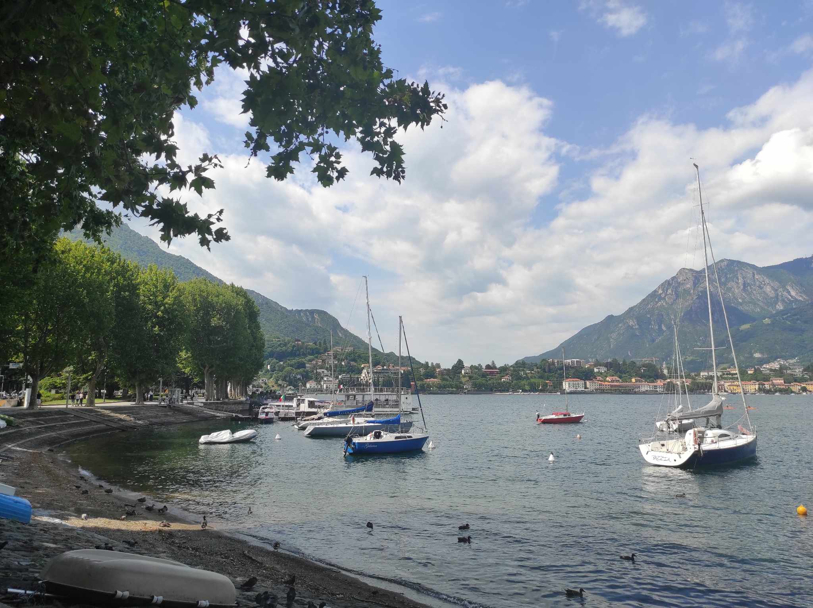
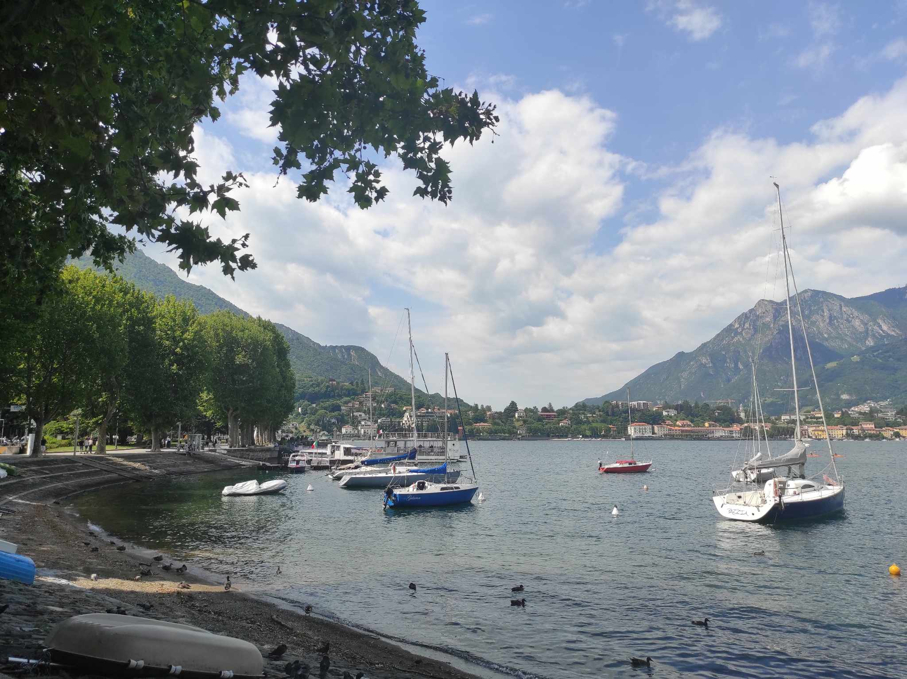

7.07.2023-11.07.2023
Bergamo | Jezioro Como, Lecco | Mediolan
~2023~
Bergamo | Jezioro Como, Lecco | Mediolan
Miasto - Pierwsze piętro
Pilates w MyfitnessPlace na Mogilskiej
Pilates jest uniwersalnym treningiem, który wzmacnia wszystkie partie mięśniowe. Czerpie sporo z innych aktywności sportowych: tai-chi, jogi, baletu i gimnastyki. Trening ten ma na celu uelastycznienie mięśni, rozciągnięcie i wzmocnienie mięśni głębokich(bez nadmiernego ich rozbudowania), poprawę postawy, obniżenie poziomu stresu, odciążenie kręgosłupa i poprawę zdrowia ćwiczących osób.
Poczytaj więcej o innej dyscyplinie sportu - jodze
Wejście na Mogielicę
Joga w Parku Bednarskiego
Joga to dyscyplina samodoskonalenia, medytacji i ascezy, która w sensie ogólnym ma prowadzić do rozwoju duchowego. Joga jest jednym z sześciu systemów filozofii indyjskiej, która zajmuje się związkiem pomiędzy ciałem i umysłem.